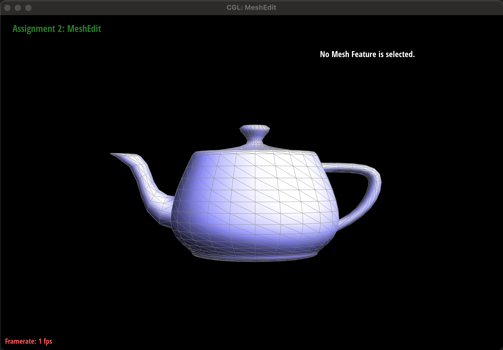

CS184/284A Spring 2025 Homework 2 Write-Up
Link to webpage: https://cal-cs184-student.github.io/hw-webpages-drop-table-students
Link to GitHub repository: https://github.com/cal-cs184-student/sp25-hw2-team-29
Overview
In this homework, we implement the following:- Bezier curves and surfaces via De Casteljau's algorithm
- Area-weighted vertex normals
- Edge flip operation
- Edge split operation
- Boundary edge split operation
- Loop subdivision for mesh upsampling
- Loop subdivision for boundary edges
Section I: Bezier Curves and Surfaces
Part 1: Bezier curves with 1D de Casteljau subdivision
Briefly explain de Casteljau's algorithm and how you implemented it in order to evaluate Bezier curves.
-
De Casteljau's algorithm is a recursive method used to compute points on a Bezier curve.
It consists of successive linear interpolations (lerps) on each control point until a final,
singular point is reached. Linear interpolation consists of taking a ratio between two points.
Evaluating the lerps with different \( t \) ratios will give a new point on the Bezier curve, allowing us to
evaluate the entire Bezier curve with De Casteljau's algorithm.
-
In order to implement De Casteljau's algorithm to evaluate Bezier curves, we did as it said on the tin: we
linearly interpolated control points to get a new set of points we can further lerp. We do this until we get
a singular point which we then output. We also implemented a lerp helper function to further abstract and
maintain readability in our code.
Take a look at the provided .bzc files and create your own Bezier curve with 6 control points of your choosing. Use this Bezier curve for your screenshots below.
Show screenshots of each step / level of the evaluation from the original control points down to the final evaluated point. Press E to step through. Toggle C to show the completed Bezier curve as well.
|
|
|
|
|
|
|
|
|
Show a screenshot of a slightly different Bezier curve by moving the original control points around and modifying the parameter t via mouse scrolling.
Part 2: Bezier surfaces with separable 1D de Casteljau
Briefly explain how de Casteljau's algorithm extends to Bezier surfaces and how you implemented it in order to evaluate Bezier surfaces.
-
After evaluating a Bezier curve, one can use the curve itself (or rather, one of the points with
a specific ratio parameter \( u \)) as a control point along with other points in other Bezier curves
with the same ratio parameter \( u \) to create another Bezier curve in another dimension. Evaluating these
"meta-Bezier" curves, still using de Casteljau's algorithm, along another ratio parameter \( v \) outputs
our final desired Bezier surface.
Show a screenshot of bez/teapot.bez (not .dae) evaluated by your
implementation.
Section II: Triangle Meshes and Half-Edge Data Structure
Part 3: Area-weighted vertex normals
Briefly explain how you implemented the area-weighted vertex normals.
-
Normal of a face
-
To retrieve the normal of the face/triangle, we can do a cross product of two sides of the
triangle,
and unit-vectorize it. Extracting the two sides of the triangle takes a couple vector
subtractions,
and the cross-product is available through
Vector3D. -
Area of a face
-
To retrieve the area of the face/triangle, we can use Heron's formula:
- \( A \) is the area
- \( s \) is the semi-perimeter, defined as \( \frac{a+b+c}{2} \)
- \( a, b, c\) are the lengths of the sides of the triangle
\( A=\sqrt{s(s-a)(s-b)(s-c)}\)
The lengths of the sides of the triangle can be calculated by extracting the position of the vertex and of the vertex's halfedge's next's position and finding the difference.
To delineate how we implemented the area-weighted vertex normals, we need to calculate (and hence explain here) the following functions:
Note that we are calculating the area-weighted vertex normals by only considering the normals of faces that are not boundary loops!
Show screenshots of dae/teapot.dae (not .bez) comparing teapot shading with
and without vertex normals. Use Q to toggle default flat shading and Phong shading.
|
|

|
Part 4: Edge flip
Briefly explain how you implemented the edge flip operation and describe any interesting implementation / debugging tricks you have used.
- The halfedges that the current faces point to should be explicitly assigned to not lie on the same triangle when the edge flip happened
- The vertices currently connected to the edge to flip must have their halfedge pointer reassigned
- The "outer" halfedges inside the two triangles also must have their face pointers reassigned
- All halfedges also need their next() halfedge reassigned
- The halfedges being flipped need their vertex pointer reassigned
To implement this function, we made a checklist of what needs to be done:
Before we executed any reassignments, we first allocated local variables of every relevant objects: all halfedges, all vertices, and all faces. By having local variables of relevant objects, we were able to streamline the reassignment process significantly and we didn't have to worry about the specific order of the operations.
Show screenshots of the teapot before and after some edge flips.

|
|
Write about your eventful debugging journey, if you have experienced one.
-
With a bunch of edge flips, we noticed that sometimes the faces would disappear. After some more exploring
and debugging,
we figured out that this only happened when we flipped an edge next to another flipped edge. We then were
able to the figure out
that
we forgot to reassign the face pointers on the outer halfedges, so after successive flips nearby, along with
those
un-updated pointers, some faces were disappearing. After this fix, everything about edge flips seemed to
work perfectly.
Part 5: Edge split
Briefly explain how you implemented the edge split operation and describe any interesting implementation / debugging tricks you have used.
-
Splitting the given edge into two edges, which must be done no matter what:
This function will, due to the split, turn our triangles into quads. We first calculated the midpoint of the edge by using the average of the ends of the edge's coordinates:
\( midpoint = \frac{\vec{a} + \vec{b}}{2} \)
We then created a vertex with these coordinates and two new halfedges stemming from this vertex, conceptually mapped as if it's the original halfedge's next halfedge respectively. We also created a new edge for these new halfedges, and relinked the halfedges and edges together. Finally, we also corrected the other object variables associated with the halfedges (face, vertex, etc.) so they map correctly.
-
Adding the new edge to split the quad into two triangles, which must be done only if the triangle
being split isn't a boundary face:
This will add a new edge between the midpoint of the now-split edge to the opposite vertex. With the quad assured by the first part of this function that this is not a boundary face, we then create two new halfedges and a new edge to add and split this quad into two triangles, after which we assigned the appropriate object variables to these new elements. Finally, we corrected the assignments of the old object variables to connect everything properly.
To implement this function and to accommodate the boundary edge splits, we have split (pun intended) this function into two parts:
With these two parts, we were also able to deal with boundary edges succinctly and were able to reuse some code. Yay!
Show screenshots of a mesh before and after some edge splits.

|
|
Show screenshots of a mesh before and after a combination of both edge splits and edge flips.
|
|
|
Write about your eventful debugging journey, if you have experienced one.
There thankfully wasn't much debugging that had to be done, as we had taken extensive effort to plan everything out systematically. We only made one goof (we forgot to assign one of the new halfedges a new vertex) which caused a segfault when rendering. However, the segfault only occurs during render time after the split, so this bug was very hard to track down. We only tracked it down after a thorough review of the code, line-by-line.
If you have implemented support for boundary edges, show screenshots of your implementation properly handling split operations on boundary edges.
|
|
|
Part 6: Loop subdivision for mesh upsampling
Briefly explain how you implemented the loop subdivision and describe any interesting implementation / debugging tricks you have used.
-
Compute new positions for all the vertices in the input mesh, using the Loop subdivision rule,
and store them in Vertex::newPosition. At this point, we also want to mark each vertex as beinga
vertex
of the original mesh.
The positions of the old vertices can be calculated with a weighted average, with the following equation:
\( \vec{x}\,' = (1-nu) \vec{x} + u\sum \vec{x_j} \)
where \( \vec{x_j} \) are the neighboring vertices' positions, \( n\) is the edge degree of the vertex, and
\( u = \begin{cases} \frac{3}{16} & \text{if } n = 3 \\ \frac{3}{8n} & \text{if } n > 3 \end{cases} \)
However, if this vertex is a boundary vertex, the values are changed to \(n = 2, u = \frac{1}{8}\). This is manipulated here so the later calculations in this function can be reused.
The sum is calculated by scanning through every neighboring edge and summing up its twin's vertex's position. When the vertex is a boundary vertex, however, only the neighbor vertices that are also boundary vertices are added. As this is a manifold, there can only be two of these vertices.
After the new position is calculated, it can then be stored in each vector's newPosition object variable. The position will be updated at the end of this function. For future sections of this function, the isNew object variable of these vertices are also marked as false, signifying that these are old vertices.
-
Compute the updated vertex positions associated with edges, and store it in Edge::newPosition.
The position of the new vertices can be calculated with a weighted average as well, although with a different equation:
\( \vec{x}\,' = \frac{3}{8}\sum\vec{x_{edge}} + \frac{1}{8}\sum\vec{x_{tip}} \)
where \( \vec{x_{edge}} \) are the vertices at the endpoints of this edge, while \( \vec{x_{tip}} \) are the "outside" vertices that, when combined with the edge vertices, make up the two triangles this edge lies on.
Boundary edges (of course) have a different equation, which is simply an average of the two endpoint vertices' positions.
After the new position is calculated, it can then be stored in each edge's newPosition object variable. For future sections of this function, the isNew object variable of these edges are also marked as false, signifying that these are old edges.
-
Split every edge in the mesh, in any order.
While the instructions are straightforward, the implementation is tricky and does take some careful considerations. In essence, the splitEdge() function from Part 5 will be called; however, as this is called repeatedly and with the function adding new edges to the list, looping over "all" edges can become a problem. Furthermore, not only will we be adding edges, some of these will be adding "old" edges as well -- with isNew set to false.
To loop over all original edges safely, we determined a clear-cut condition to mark these original edges: isNew must be false, and both vertices that make up the end of this edge must also be old. With this, we can safely loop over the edges list.
However, we are not quite done inside the for loop. As the new vertex associated with each split edge is created, we can assign the new positions to these vertices now. This will save us a lot of hassle trying to find the original edges which have the calculated values later.
-
Flip any new edge that connects an old and new vertex.
Similarly to section 2, we only want to flip edges with a certain condition. In this case, we want to flip new edges which has one of its endpoints in the new vertices and the other in the old. As no edges are added or deleted, a simple for loop suffices in scanning over the entire list.
-
Copy the new vertex positions into final Vertex::position.
As the new vertices already has their positions updated, only the old ones are left. This can be done with a simple for loop over the list to find vertices with isNew set to false, signifying an old vertex. Getting the updated position is straightforward as well, as the value is stored in each old vertex.
Implementation of this function was mostly straightforward, but with a few caveats. The main structure of this function follows from the example, and the changes will be detailed below.
Debugging this was a nightmare. We discovered a few potential problems such as our flipEdge() being too powerful and allowing the user to corrupt a manifold into not being a manifold anymore. This has been updated so that there can only be one edge per two vertices, and the flipEdge() function will not flip an edge if doing so will violate this rule.
After many print statements and major amounts of minor code change (paranoia from the for loops perhaps going too far/short) we discovered the problem to be us not quite understanding how to use the isNew variable properly, and setting the value wrong. After this discovery, looking through Edstem to see others suffering from the same fate, and going over the slides again, we were able to correc tthis error.
Take some notes, as well as some screenshots, of your observations on how meshes behave after loop subdivision. What happens to sharp corners and edges? Can you reduce this effect by pre-splitting some edges?
|
|
|
|
|
|
Generally, all sharp corners and edges are rounded into curvy shapes from Loop subdivision. Pre-splitting the edge does help, though, as splitting a smaller edge makes a smaller difference in a Loop subdivision.
Load dae/cube.dae. Perform several iterations of loop subdivision on the cube. Notice that the cube becomes slightly asymmetric after repeated subdivisions. Can you pre-process the cube with edge flips and splits so that the cube subdivides symmetrically? Document these effects and explain why they occur. Also explain how your pre-processing helps alleviate the effects.
|
|
|
|
|
|
|
|
|
|
|
|
The assymmetries in the default cube was due to the un-symmetric faces and how the edges are laid out. The higher degree a corner is, the more it will retain its pointiness compared to a lower-degree vertex. To achieve more roundedness, balancing/equalizing the degree of each corner is a suitable way to do it, as shown above. This is done by pre-splitting every face-edge so that each cube face is made out of 4 triangles, with the edge crossed over from each corner, rather than the 2-triangle setup in the default cube, which has an asymmetric slash over each face.
If you have implemented any extra credit extensions, explain what you did and document how they work with screenshots.
|
|

|
We implemented Loop Subdivision for boundary edges as well! Most of the implementation intricacies have already been stated above, but to summarize: Boundary edges uses different calculations for its new positions, only relying on other neighbor boundary edges instead of all neighbors. This required some extra if statements to modify normal calculations to boundary-object-specific ones.
With no boundary-object Loop subdivision, the leadlight of this beetle will still be staggered. However, with our implementation, it is nice and round! Yay!
(Optional) Section III: Potential Extra Credit - Art Competition: Model something Creative
N/A